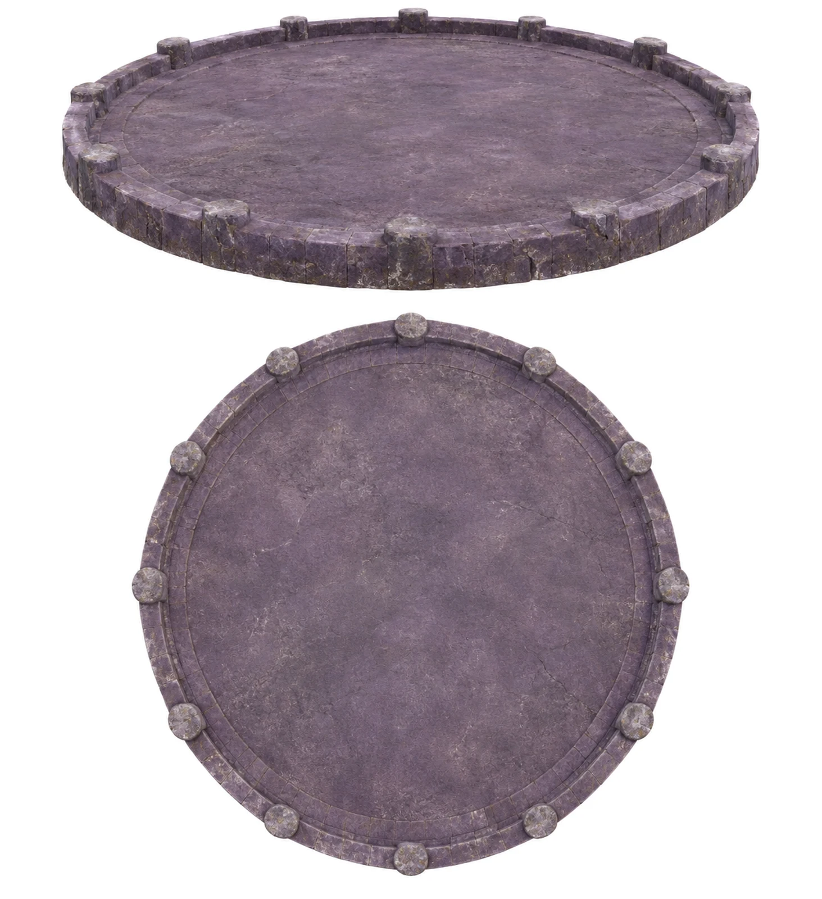

游戏广告2
剧本与分镜
完整剧本与分镜脚本
下载原文游戏广告 · 游戏广告2 原片时长 26.84 秒 故事梗概 赤巾游侠在紫岩场地中央应对零散侦察兵。群袭涌入后，奖励箱出现，银发援军加入并带来新的蓝白光效。首领警报响起，黄铜角冠角色进场，最终战斗失败。图像采用独立原创真人化设计，界面提示以脚本描述。 人物 赤巾游侠是操作焦点，银发援军是已选支援，金发援军作为候选；绿苔侦察兵、暗红群袭兵和角冠首领形成三个阶段。 场景 紫岩围场开放且平坦，中央用色差定位主角色，四周为群袭入口。 道具用途 两个奖励箱区分前后奖励阶段。圆币和环形法器指示掉落与新能力。界面面板不单独出图。 剧本与分镜 按原片抽帧重建的复拍制作稿。画面未能确认的对白、音效与镜头节奏按下表执行。 | 镜号 | 画面内容 | 镜头视角 | 使用资产 | 动作描述 | 台词/旁白 | 音效 | 单镜头时长 | | 01 | 赤巾游侠对零散绿苔兵蓄力 | 固定近垂直俯拍 | 赤巾游侠、绿苔侦察兵、紫岩围场 | 游侠转向敌群，红弧短暂绕身 | — | 短促弧声 | 4.40秒 | | 02 | 金光落入场内，群袭出现 | 俯视宽景 | 暗红群袭兵、赤巾游侠 | 圆形落点闪亮，边缘大群开始合拢 | — | 落点重音 | 1.80秒 | | 03 | 攻击波反复分离群袭 | 俯视持续跟拍 | 赤巾游侠、暗红群袭兵、小型奖励圆币 | 游侠穿行，红弧扫过边界，圆币出现 | — | 密集脚步、奖励音 | 5.10秒 | | 04 | 赤金箱亮起，两名候选进入选择 | 俯视画面压暗接道具近景 | 赤金奖励箱、银发援军、金发候选援军 | 箱出现后展示两个候选，选择银发 | 提示：选择援军。 | 开箱、提示音 | 3.20秒 | | 05 | 银发援军入场，环形法器旋转 | 俯视中景 | 两位主角、环形银色法器、青金奖励箱、群袭兵 | 蓝白效果加入红弧，边缘群体继续涌入 | — | 银铃、循环脉冲 | 4.50秒 | | 06 | 首领来临提示 | 垂直俯视广角 | 紫岩围场、群袭兵、赤巾游侠 | 红边预警覆盖场地，中心出现角冠剪影 | 提示：首领来袭。 | 警报 | 2.20秒 | | 07 | 角冠首领进入，队伍被压缩 | 定轴俯视 | 黄铜角冠首领、赤巾游侠、银发援军、群袭兵 | 宽大首领从上方占位，红蓝光效向中心收缩 | — | 低频冲击 | 3.60秒 | | 08 | 画面降暗显示结果 | 固定俯视全景 | 紫岩围场、角色组 | 压暗跑动层，给失败提示留屏 | 提示：战斗失败。 | 结算收尾 | 2.04秒 | 时长合计 26.84 秒
制作资产
角色资产 · 12 项
场景资产 · 1 项
